Physical Computing
Oleskandr Pyets
Still Here | Art Path | Individual project
Module 1
Activity Research
The class activities were a chance to try Arduino, ProtoPie Connect and TouchDesigner using the examples provided to us. I was especially interested in how physical inputs could affect visuals. After exploring different directions, I decided to focus on Still Here, an idea for a projection that responds to someone simply remaining in a space.
Activity 1
I tested the Arduino Uno, Blink sketch, and sensor readings in the Serial Monitor. Turning the potentiometer showed how physical input becomes data.
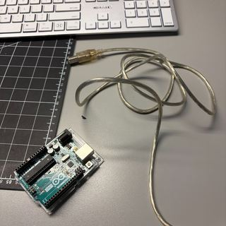
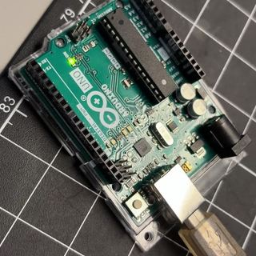
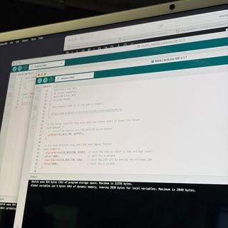
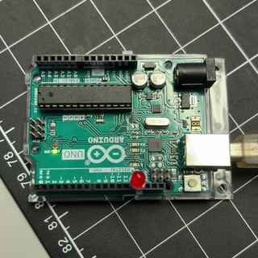
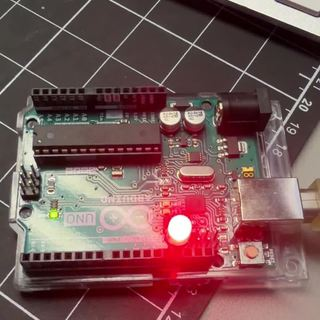
Activity 2
I followed the class ProtoPie Connect example to view degree, temperature and humidity readings from Arduino. The phone preview took some troubleshooting because my phone and computer were on different Wi-Fi networks. Once I switched networks so they matched, I could connect.
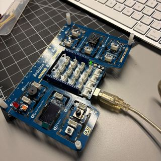
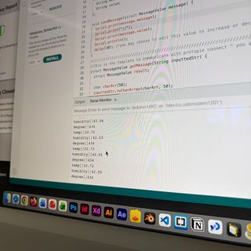
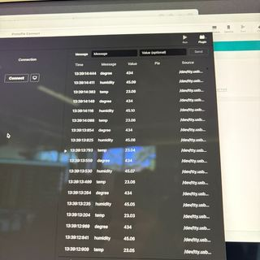
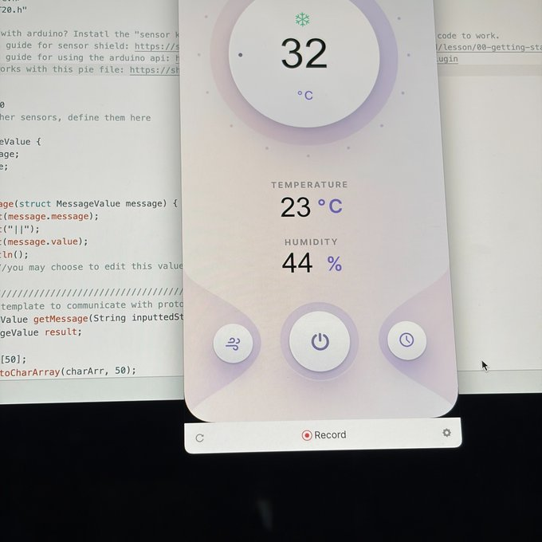
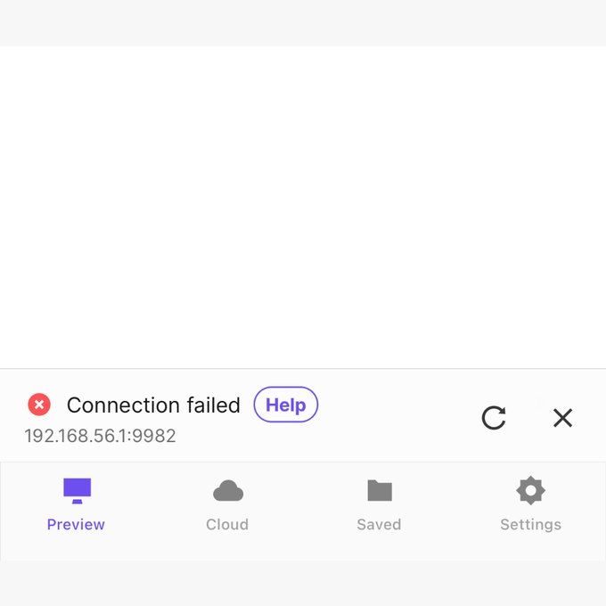
05 / Not exactly the screenshot I hoped to include, but the connection error earned its spot. The phone and computer needed to be on the same Wi-Fi network; switching networks fixed it. Sometimes the problem really is the Wi-Fi.
Activity 3
I followed the class-provided Arduino connection and circular TouchDesigner visual, testing how an input changed the image on screen. This was the software I found most interesting because I enjoy working with visuals.
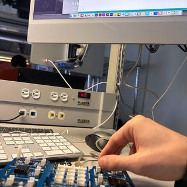
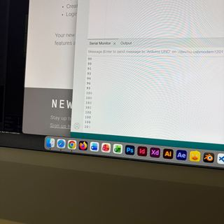
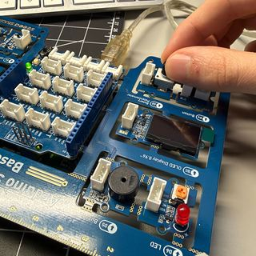
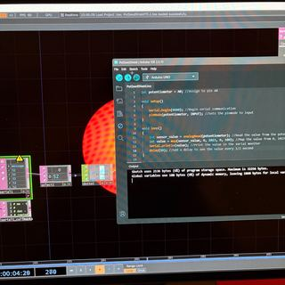
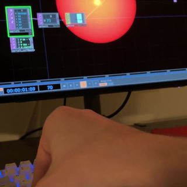
TouchDesigner wouldn’t work on the lab computer, so I took the Arduino home and continued the test on my own computer. The fourth photo shows that setup.
Research Activity
I started with two home-tech directions that interested me: responsive environments and touchless interaction. The reports describe what people are using and buying in 2026, while the 2027–2028 part is where I started thinking about how those ideas might develop. I was more interested in what they could mean for an artwork than in designing another smart-home product.
01 / Consumer trends for 2027–2028
Category 1: Responsive environments
Source and direction. NielsenIQ's 2026 The Smart Home Evolution report looks at how connected technology is becoming part of ordinary homes. I'm interested in spaces that notice someone's presence and respond without needing a separate screen or app (NielsenIQ, 2026).
What makes it different? The space becomes part of the interface. For example, the Philips Hue motion sensor can turn connected lights on when it detects movement, with behaviour that can vary by time of day (Philips Hue, n.d.). An artwork could use the same idea of a physical input, but respond with colour, shapes or projection instead.
Research statistic. NielsenIQ reports that 27% of Americans used a smart-home product in the previous 30 days. I don't see this as evidence that people want interactive art; it tells me that responding environments are already part of daily life for some people. It made me curious about using that familiar relationship in a less practical, more expressive way.
Category 2: Touchless interaction
Source and direction. Worldpanel by Numerator's 2026 smart-home research emphasizes that ease of use remains important to buyers. I wanted to explore interactions that don't need a touchscreen, especially gestures that can change a projected image (Worldpanel by Numerator, 2026).
What makes it different? A small movement can become an input without touching anything. Google Nest Hub (2nd generation) uses radar-based Motion Sense for quick gestures; it doesn't need a camera to detect those gestures (Google, n.d.). That's an interesting example of technology recognizing an action people make in the air.
Research statistic. 60% of smart-speaker buyers in Worldpanel's U.S. research named ease of use as one of their main buying criteria. That doesn't mean 60% want gesture controls. It reminded me that an installation can be interesting to look at and still fail if people can't tell what caused the response.
For both directions, I'm taking inspiration from the input-and-response relationship rather than trying to predict exactly what homes will look like in 2028. The first category influenced Still Here; the second opened up ideas involving gestures and visual feedback.
02 / Research-informed personas
I used the Pew, YouGov and smart-home research to imagine two possible visitors. Nia and Alex are fictional working personas, not people I interviewed. Their habits around a projection are questions I want to test, not conclusions I can draw from their age.
Nia, 26 / Gen Z visitor
Summary. Nia represents a visitor who might want to explore an installation without first reading a long explanation. I would be interested in seeing what she tries naturally when she approaches a projection.
Generational context. Pew found that 33% of U.S. adults aged 18–29 said they owned a smart speaker with AI features in February 2026 (Pew Research Center, 2026). That suggests some exposure to connected devices in this age group, but it doesn't tell me how any individual would behave in a gallery.
Behaviour data. The Pew ownership figure provides context for familiarity with home technology. It is not a finding that Gen Z visitors prefer self-guided art.
Buying priority data. YouGov reports that 49% of U.S. Gen Z respondents consider consumer reviews important when choosing large household appliances (Bali, 2026). This is buying research, not a measure of curiosity about installations.
Action to test. Would Nia step into the space, notice a change, leave and return to see whether the image reacts again? I'd rather watch what a real participant does than assume that behaviour from the persona.
Alex, 40 / Millennial visitor
Summary. Alex represents someone who might expect an interactive system to respond consistently and make its cause and effect clear. I would want to know whether the experience makes sense to a person who gives it only a short amount of time.
Generational context. In Pew's 2026 comparison, 41% of U.S. adults aged 30–49 reported having a smart speaker with AI features, the highest percentage among the age brackets shown (Pew Research Center, 2026). Familiarity with devices might shape someone's expectations, but it isn't a guarantee.
Behaviour data. The 41% ownership figure describes access to smart technology. I can't use it to claim that Alex would understand a new gesture or projection automatically.
Buying priority data. YouGov found that 49% of U.S. Millennials also consider appliance reviews important (Bali, 2026). Worldpanel's broader finding about ease of use adds another reason to think carefully about clear feedback.
Action to test. Would Alex recognize that a small gesture or a period of standing still caused the image to change? If not, would a quicker initial response help?
These personas helped me separate two questions: can someone discover an interaction, and can they understand it once it responds? The consumer studies don't answer either question for a projection. Actual observation would have to do that.
03 / HMI: How Might I?
The How Might I approach helped me turn uncertainties into questions without deciding on the technology too early. I used the positive, open-ended framing described by Rosala (2021) and discussed in our Week 5 lecture (Sheridan College, 2026).
Responsive environments
Problem space 1. A projected image that changes slowly could look like a normal video. Visitors might not realize their presence matters.
HMI 1. How might I make standing still produce a noticeable change without making it feel like an ordinary timer?
Problem space 2. Some sensors respond to movement but aren't suitable for recognizing someone who has stopped moving.
HMI 2. How might I show that remaining in one place continues to affect the image?
Touchless interaction
Problem space 1. A visitor might walk past an invisible gesture interaction without realizing there's anything to try.
HMI 1. How might I encourage visitors to discover a touchless interaction through the artwork itself?
Problem space 2. If a gesture doesn't register, there may be no clear feedback and the person might assume they're doing it wrong.
HMI 2. How might I make a small gesture produce a response that feels understandable and playful?
I kept the questions connected to a real uncertainty, described what I want visitors to experience, and left room for more than one answer. None requires a particular sensor. A webcam, Kinect, distance sensor or another approach could be worth testing, depending on what the interaction needs.
04 / Choosing my path
Responsive environments
Art or Design? I'm choosing Art. I enjoy UX/UI design, but right now I'm more interested in experimenting with how a room can respond to someone's presence than designing a practical interface. I'll still think about the UX side, especially whether the visitor understands that something is responding to them.
Individual or collaborative? I'd like to start individually so I can focus on making one input and one visual response work before adding more complexity. I can change the visuals as I learn what the sensor actually detects.
Possible direction: Still Here. Someone stands in a marked area while a projection gradually changes colour. When they leave, the image fades back. I like the idea that simply staying could count as an interaction; this is the direction I want to keep exploring.
Another direction: Afterimage. Someone approaches a wall and thin projected marks gather around the space. The marks linger briefly after the person leaves. I like the sense that a room can hold a temporary trace without identifying who was there.
Touchless interaction
Art or Design? I'd choose Art for this direction too. A touchless museum control could be a Design Path project, but I'm more curious about gestures affecting an entire projected environment than making another kind of button.
Individual or collaborative? I'd start individually with one or two actions I can test. Tracking several people or making a large installation might call for collaboration later, but I don't want to assume I need that from the start.
Possible direction: Weather You Can't Hold. Small hand swipes send projected particles sideways or upward, almost like blowing wind through something that isn't physically there. It's more immediately playful than Still Here, but people would need to discover which gestures work.
Another direction: The Sound of Home. A microphone changes an abstract visual based on everyday room sounds. This isn't gesture control; it's another way of interacting without touching a screen. I liked the thought of the environment producing its own input.
Visual explorations / Four concept directions
These are early visual sketches of the possible interactions, not photos of completed installations. Click any image to view it larger.
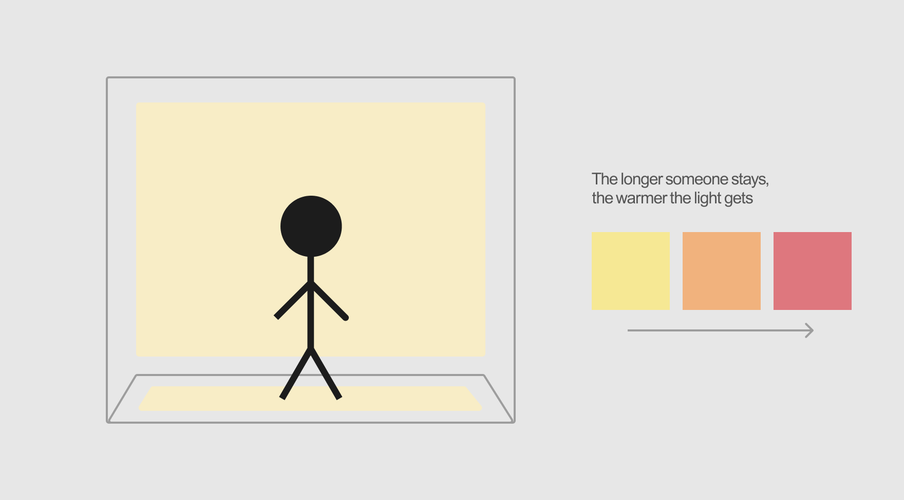
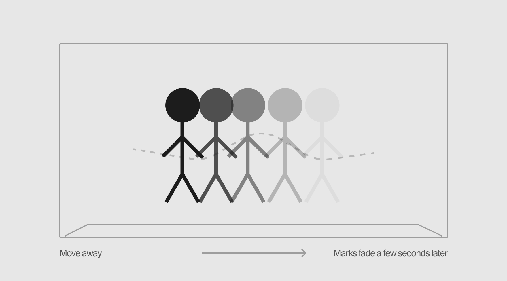
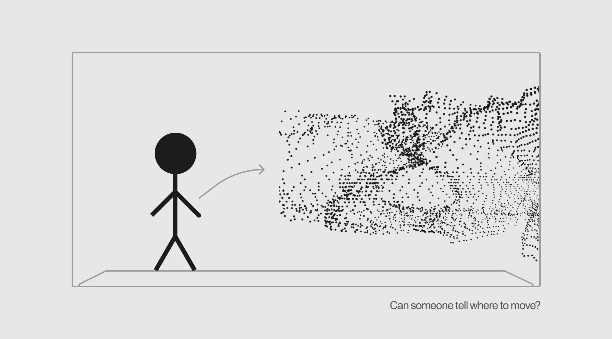
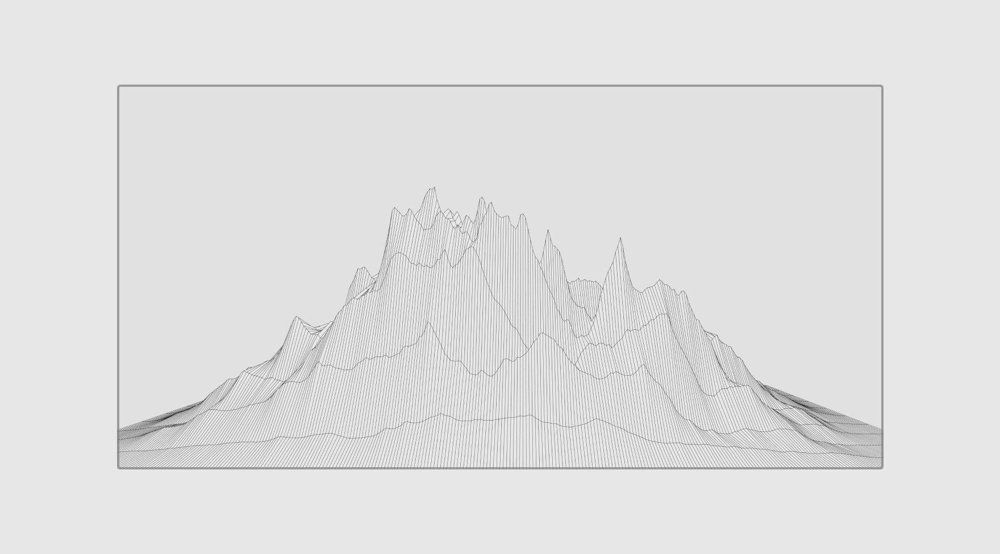
05 / Where the research led me
After comparing the directions, I kept returning to Still Here. It asks less of the visitor than the gesture ideas. There's no specific movement to learn, which makes me curious about whether the change in the projection can feel like an acknowledgement of someone simply being there. Isabelle Pleno's Taking Up Space and the immersive work discussed by Gensler gave me more ways to think about bodies and the surrounding space (Pleno, 2024; Gensler Research Institute & Immersive Experience Institute, 2025).
I haven't chosen a sensor yet. A webcam with person detection, a Kinect or another suitable sensor could be more useful than a simple motion trigger because I need the system to keep recognizing someone who stands still. I also looked at interactive motion tracking and TouchDesigner particle examples to understand what's possible visually, without treating them as completed experiments of my own (Go2 Productions, 2025; sabz, 2019; Derivative, n.d.). I want to test whether yellow-to-red feels interesting or too much like a warning. The first test would be small: one presence signal, a quick sign that the person has been noticed, and a slower colour change they can watch unfold.
Research sources
These are the reports, product examples and art references I used while developing the research and concepts.
NielsenIQ. (2026, September 15). The smart home evolution: AI, outdoor innovation, and the next wave of home improvement. Source.
Worldpanel by Numerator. (2026, October 19). What do consumers really want from the smart home? Source.
Pew Research Center. (2026, June 17). People in their 30s and 40s are most likely to have smart speakers, doorbells and thermostats at home. Source.
Bali, S. (2026, June 24). Decoding large household appliance purchases: How motivations shift across generations. YouGov. Source.
Philips Hue. (n.d.). Motion sensor. Source.
Google. (n.d.). Motion Sense on Nest Hub. Google Home and Nest Help. Source.
Rosala, M. (2021, January 17). Using “How Might We” questions to ideate on the right problems. Nielsen Norman Group. Source.
Gensler Research Institute & Immersive Experience Institute. (2025). Evolving immersive: The 2025 immersive entertainment & culture industry report. Source.
Pleno, I. (2024). Taking up space. Source.
Go2 Productions. (2025, March 10). How motion tracking enhances interactive installations. Source.
sabz. (2019, November 13). Particle flow workflow [Online forum post]. TouchDesigner Forum. Source.
Derivative. (n.d.). Getting started with TouchDesigner [Workshop listing]. Source.
Sheridan College. (2026). Physical Computing Week 5 [Lecture slides]. DESN 30146, Interaction Design: Physical Computing.
Project 1 Concept
Still Here
Still Here is a proposed interactive projection that changes as someone spends time in one spot. A visitor enters a marked area and the projected colour begins in yellow, gradually shifting toward orange and red while they remain. When the person leaves, the image fades back. I am curious about whether stillness can count as an interaction, and whether a room can acknowledge someone without identifying or recording them.

Proposed interaction
Input: someone enters or leaves an active area. Sensor: a webcam, Kinect, or another reliable presence sensor detects whether someone remains there. Visual response: TouchDesigner gradually changes the projection over time. The sensor choice is still open; these are plans, not a finished installation.
Testing plan
I would first test whether the chosen sensor can keep detecting a person standing still. Then I would compare a quick visual acknowledgement with a slower colour transition. I also want someone to try it without instructions, to see whether they understand that their presence is changing the image. The yellow-to-red colours may need revisiting if red feels like a warning.
Reflection
We followed examples provided during the Arduino, ProtoPie Connect and TouchDesigner activities. I enjoyed seeing how a physical input could affect something visual, even though the TouchDesigner exercise took extra work when it would not run on the lab computer. I started without a project chosen and gradually became more interested in interactive projections. Still Here feels worth testing, even though I have not settled the sensor or the exact visual response.
Powered by w3.css